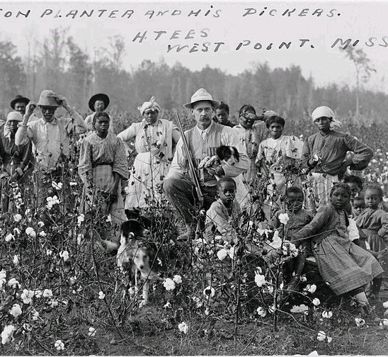

RESTITUTION STUDY GROUP rsgincorp.com
ABOUT US

INNOVATIVE APPROACHES TO JUSTICE
Welcome to the Restitution Study Group (RSG) website. We are a not-for-profit institute based in the New York City-metropolitan area. Founded by Deadria Farmer-Paellmann in 2000, we examine and execute innovative approaches to healing the injuries of exploited and oppressed people.
The RSG partners with community advocates to bring about positive change through litigation, DNA research,and direct action.
photo by Wikipedia
Image of enslaved African women, children and men on a Westpoint, Mississippi cotton slave labor camp with owner.
We popularized the slavery reparations movement in 2000 by exposing corporate complicity in slavery. By 2002, we coordinated the filing of slavery restitution cases around the United States against tainted corporations.
EARLY SLAVERY REPARATIONS PIONEERS
Callie House and Isaiah H. Dickerson (depicted in the above Library of Congress broadside) were ex-slaves who headed the first mass movement for slavery reparations in 19th Century United States. Article by Miranda Booker Perry.
video by Earl Pinto
Queen Mother Audley Moore was one of the most outspoken slavery reparations activists of the 20th Century.